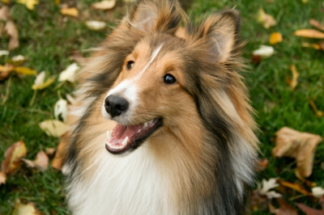
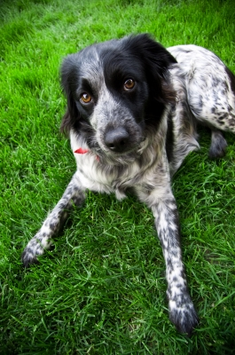
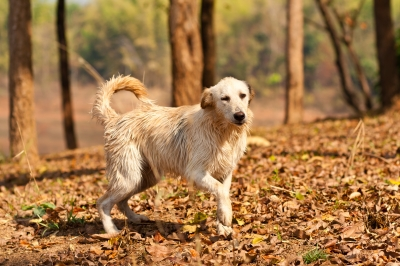
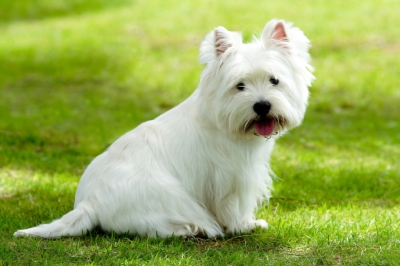
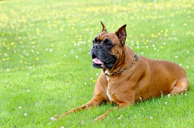
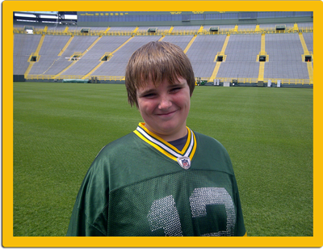

- Image courtesy of Tony Dowson at FreeDigitalPhotos.net
- Image courtesy of Ian Kahn at FreeDigitalPhotos.net
- Image courtesy of Graur Razvan Ionut at FreeDigitalPhotos.net
- Image courtesy of soilbedust at FreeDigitalPhotos.net
- Image courtesy of nixxphotography at FreeDigitalPhotos.net
- Image courtesy of Dan at FreeDigitalPhotos.net
The Incredible Paws
Incredible Paws is dedicated in helping you keep your dog healthy and happy as can be. In today’s busy world, it’s understandable that you aren’t able to accomplish everything you want to everyday. That’s where I can help. I am able to walk and play with your dog as much or as little as you want.
So, whether you're working extra hours or going on a vacation and you need someone to walk your dog for a short time, you can always count on me to show up and walk your best friend.
About Me
- 
I’m Nick VanRoss and thanks for stopping by!
I started this business because I love dogs. I’m in 7th grade and wanted to do something other than play video games, so I decided to start walking dogs as a business. I live in the Ashwaubeon area, and am available to walk your dog after school during the school year or on weekends. During the summer, I am available all day.
Services
With each dog walking job, I include this as part of the job:
- Free 1 hour get-to-know each other (me, your dog and you) in your home in the beginning.
- A note after each time I walk the dog.
- Making sure your dog has food and water after his walk.
Here is the pricing and what is included in each package you select:
| Let's Go! | Hanging Out | More than 1 dog in your family? |
|---|---|---|
| 20-30 minute walk | 1 hour walk | |
| Description: A walk around the neighborhood. | Description: A walk around the neighborhood and play time (as the weather permits) | |
| $3.75 | $7.50 | $1 extra per dog- up to a total of 3 dogs per walk |
F and Q's
When do I pay you?
It’s been my experience that the money was left on the counter when I would show up. However, if you want me more than 1 day a week, I would accept payment once a week.
When are you available to walk my dog?
I have two schedules for when I'm in school and when I'm on summer vacation.
| During the School Year | Anytime outside of the school year | |
|---|---|---|
| Monday- Friday | Saturday/ Sunday | Monday- Sunday |
| 4pm - 7pm | 10am - 7pm | 10am - 8pm |
How many dogs do you want per walk?
I can walk up to 3 dogs at one time.
Do you provide toys for my dog?
I do not provide any toys or leashes for your dog. If your dog has a favorite toy, please let me know.
What about weather conditions?
It’s not healthy for me or your dog to be out in weather that will make either of us sick. So, if it’s raining or snowing, I will send you a text message letting you know that I will not be showing up due to the weather.
Do you walk dogs for only when people go on vacation?
I walk dogs whenever someone needs me. The job can be everyday or it can be for vacation only.
Contact
If you have any questions or are interested in meeting me, please feel free to contact me.
The Incredible Paws
Ashwaubeon, WI 54304
(920) 857-7010
Email me directly:theicredbilepaws@gmail.com
Get In Touch!
Fill out my contact form below to get in touch with me! Please provide as much information as possible for me to help you with your enquiry :)
© 2013 The Incredible Paws All rights reserved